选择处理服务，导入简历或背景材料，形成可核对的候选人资料。
产品需求文档｜当前版本
岗位采集与投递准备工作台
面向个人求职场景的岗位发现、正文整理、资料匹配与人工投递准备工作台。文档定义当前版本的产品范围、功能模块、状态规则、数据边界与验收要求。
文档类型产品需求文档
适用范围个人求职工作台
交付内容页面、服务、流程与产物
评审基线v1.6 / P0
01 / 产品定义
产品范围与目标
本节定义产品承接的业务链路、核心产物和交互边界。
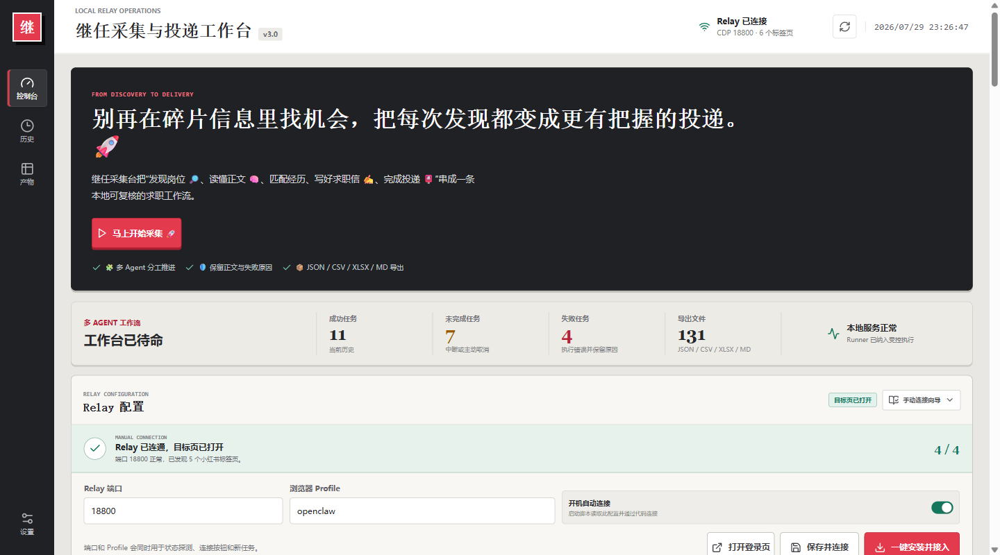
| 业务阶段 | 用户输入与操作 | 系统输出与留痕 |
|---|---|---|
| 发现 | 输入关键词，选择排序、时间范围和采集数量。 | 岗位列表、原帖链接和采集进度。 |
| 理解 | 查看岗位正文、职责、要求和投递入口。 | 岗位信息分组显示，并标出来源和待确认内容。 |
| 准备 | 结合自己的资料，编辑私信、邮件和求职信。 | 文案草稿、评分和修改记录。 |
| 确认 | 检查内容后复制私信、打开原帖或发送邮件。 | 任务记录、发送结果和可下载文件。 |
02 / 界面现状
核心页面与现状截图
以下截图用于说明当前版本的页面结构、信息密度和主操作入口。
提供浏览器连接配置、运行状态和新建任务入口。
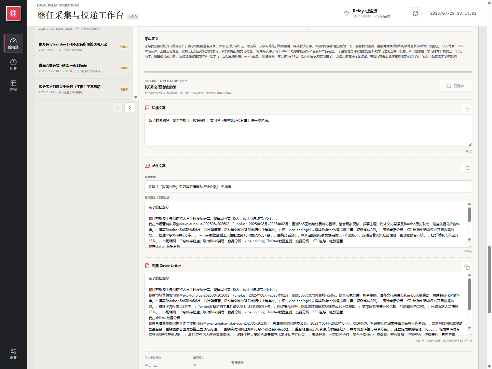
集中展示岗位正文、要求、投递路线及三类可编辑文案。
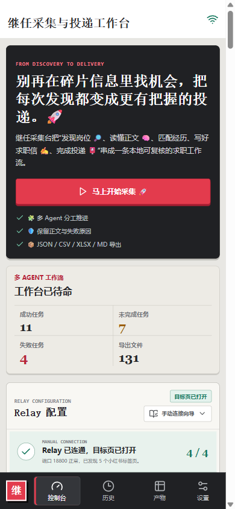
支持任务进度、异常信息和产物状态的快速查看。
03 / 业务流程
端到端业务流程
任务从配置、连接和前置检查开始，经采集与结构化处理，进入人工确认和交付准备。
阶段 01资料准备
阶段 02浏览器连接
连接 Relay，打开目标页面，完成登录态和标签页检查。
阶段 03任务执行
创建并运行采集任务，持续记录进度、阶段结果和异常原因。
阶段 04人工确认与交付
核对岗位事实与来源，编辑文案，再执行复制、打开原帖或邮件发送。
完成判定：岗位结果可回看，关键字段具备来源，文案通过质量检查，交付文件可下载。正文不完整时，系统必须记录已获取内容、缺失范围和后续处理路径。
04 / 产品架构
系统架构与职责边界
产品架构图、任务状态机和数据流分别定义运行组件、状态转移及产物落盘关系。
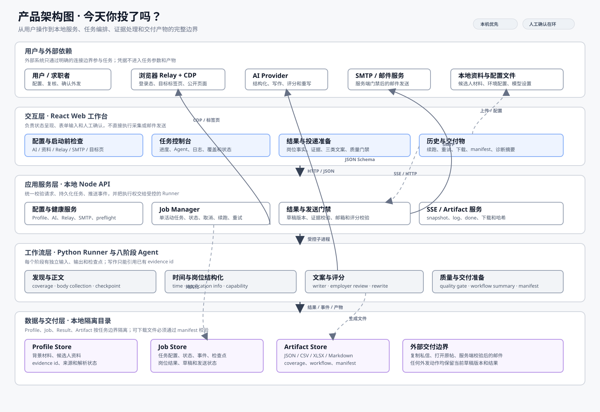
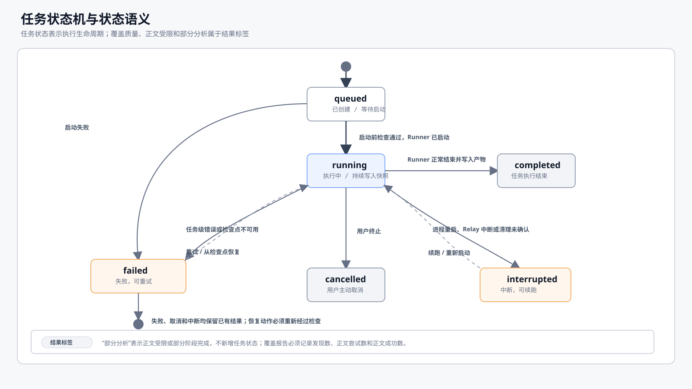
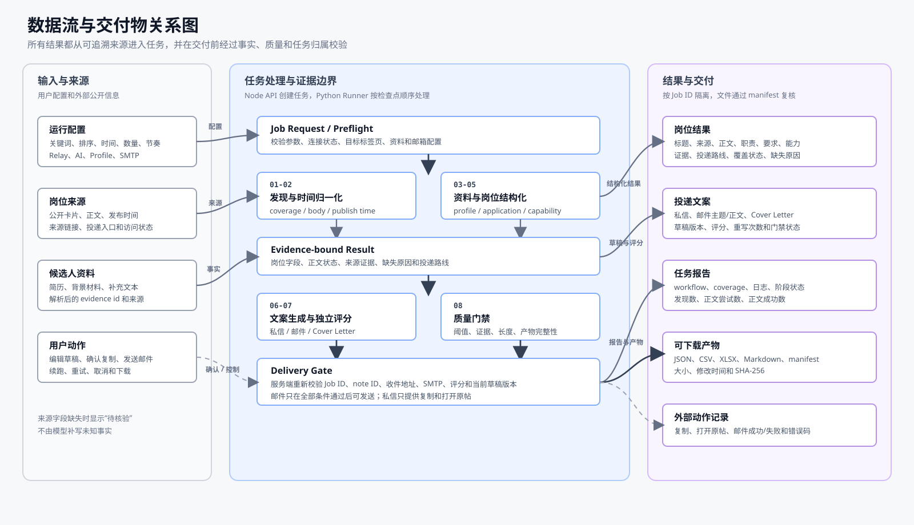
| 架构层 | 职责 | 边界与校验 |
|---|---|---|
| 页面 | 承载配置、任务启动、结果查看、文案编辑和文件下载。 | 页面负责交互与展示；任务状态来自 API 和实时事件；文案保存状态必须明确展示，切换前默认自动保存。 |
| 本地 API | 检查请求，保存任务状态，启动采集流程，控制发送条件。 | 每次状态变化都有记录；不同任务的文件彼此隔离；发送前再次检查收件人和文案。 |
| 处理流程 | 依次完成采集、整理岗位信息、匹配资料、写文案和质量检查。 | 正文状态和卡片摘要分开；文案只使用已有资料；中断后能从检查点继续。 |
| 本地文件 | 保存个人资料、任务、岗位结果、草稿、日志和导出报告。 | 每条任务单独存放；下载文件的大小和 SHA-256 与实际文件一致。 |
| 外部服务 | 提供浏览器页面、内容处理、岗位来源和邮件发送能力。 | Relay、SMTP 或处理服务异常时返回明确状态；外部动作必须经过人工确认。 |
任务完成判定：“Runner 已启动”仅代表任务进入执行阶段。岗位数量、正文状态、文案检查和导出文件均满足要求后，任务才可标记为
completed。05 / 流程模型与交付门禁
任务流程、模块依赖与交付门禁
本节使用五张图定义用户流程、八阶段处理、模块边界、交付条件和页面入口。
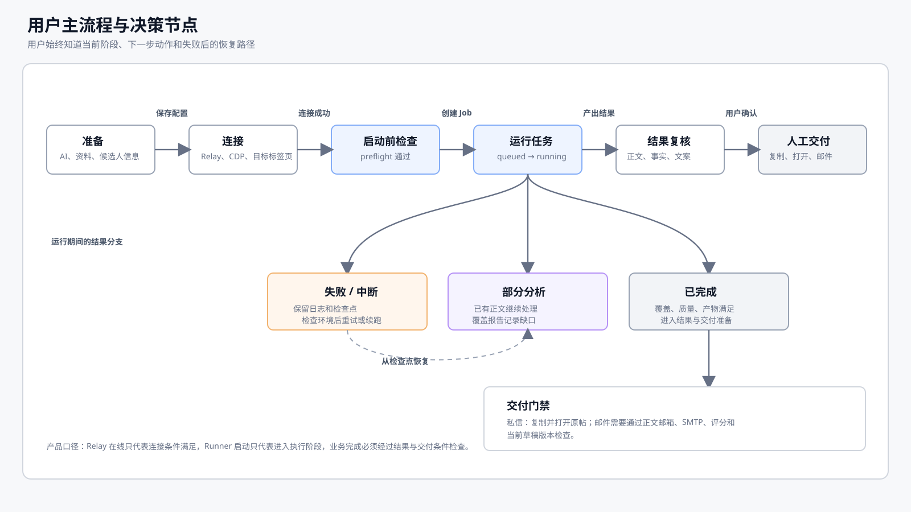
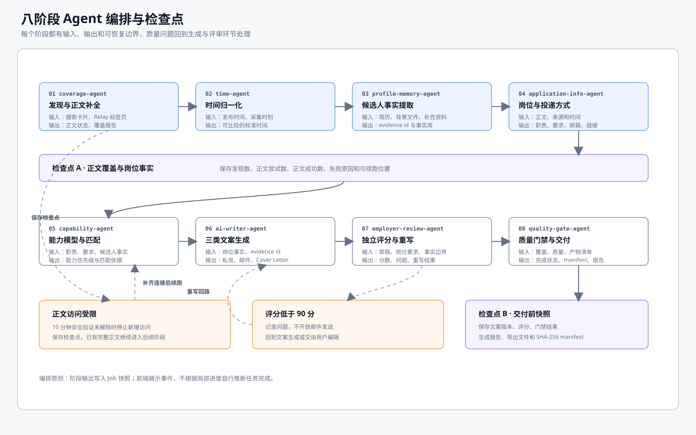
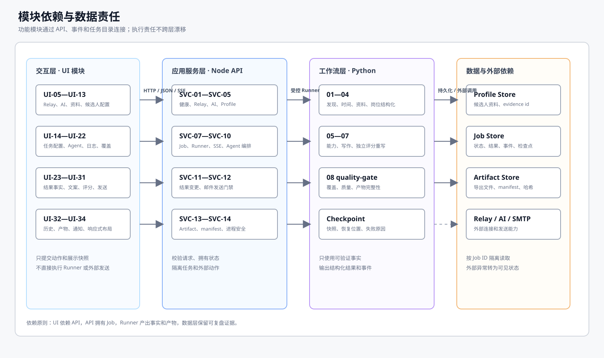
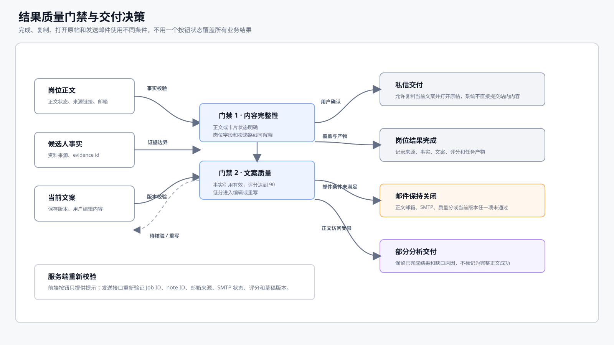
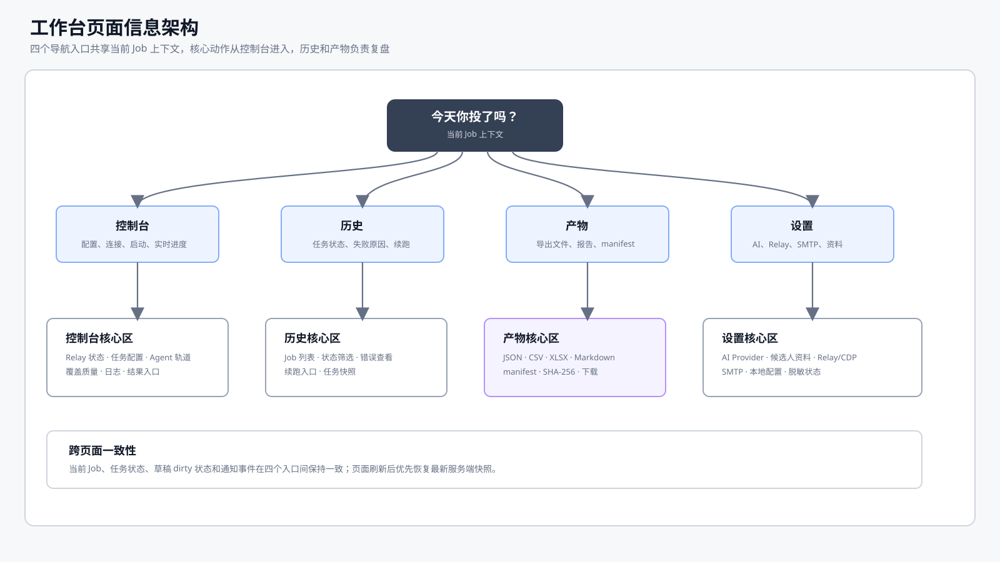
| 图表 | 关键关注点 | 对应结论 |
|---|---|---|
| 用户主流程 | 页面状态和异常处理 | 明确各阶段的用户操作、系统反馈和恢复路径。 |
| 处理阶段 | 输入、输出和检查点 | 明确八个阶段的处理职责及可重试范围。 |
| 模块依赖 | 调用边界和数据归属 | 明确状态归属及必须经过 API 的操作。 |
| 交付检查 | 复制、完成和发送条件 | 明确不同交付动作的准入条件。 |
| 页面结构 | 入口、刷新和任务恢复 | 明确四个入口的任务上下文共享和刷新恢复规则。 |
06 / 业务规则
业务规则与决策约束
以下规则约束页面操作、任务状态、数据来源和外部交付行为。
| 规则 | 执行要求 | 设计依据 |
|---|---|---|
| 发送前确认 | 私信只提供复制和打开原帖；邮件发送前必须检查当前收件人和文案。 | 每一次外发都留得下记录，减少误发。 |
| 事实来源可追溯 | 岗位信息来自正文或卡片，个人经历来自背景材料；缺少出处的内容标记为待核验。 | 控制生成内容的事实边界，避免将未知信息写成已确认事实。 |
| 关键检查放在服务器 | 页面上的按钮只是提示，真正发送时还会再次检查岗位邮箱、SMTP、评分和草稿版本。 | 页面刷新或被绕过时，发送条件仍然有效。 |
| 完成以交付物为准 | 岗位覆盖、内容质量和导出文件均达到要求后，任务方可标记为完成；Relay 在线仅代表浏览器连接正常。 | 区分进程存活、任务执行和交付完成三个状态。 |
| 版本边界 | 当前版本支持采集、整理和人工投递准备；自动私信、自动评论、多账号和复杂 CRM 不在本版本范围内。 | 控制 P0 交付范围，优先保证单用户主流程的完整性和可恢复性。 |
07 / 功能模块总览
功能模块总览
当前版本包含 34 个 Web 端功能模块和 14 个本地服务模块，覆盖入口、配置、任务、结果、文案、交付与产物管理。
Web 端功能模块 · 34 项
UI-01全局工作台与导航UI-02顶部运行状态栏UI-03产品首屏与启动入口UI-04运行概览统计UI-05—UI-07Relay 配置、连接向导、自动准备UI-08—UI-09发件邮箱与服务商指引UI-10—UI-13AI、模型、背景材料、候选人资料UI-14—UI-18任务配置、策略、检查、启动、续跑UI-19—UI-22当前任务、Agent、日志、覆盖质量UI-23—UI-26结果列表、岗位事实、能力、投递路线UI-27—UI-31文案编辑、保存、评分、邮件、私信UI-32—UI-34历史、交付产物、通知与响应式布局
本地服务模块 · 14 项
SVC-01API 应用与健康检查SVC-02—SVC-03Relay 配置、连接与环境准备SVC-04AI 会话与模型目录SVC-05Profile 与背景记忆存储SVC-06SMTP 配置与邮件发送SVC-07—SVC-09任务生命周期、Runner、SSE 事件SVC-10八阶段处理流程SVC-11—SVC-12结果保存与邮件发送检查SVC-13文件清单与 manifestSVC-14本地配置与进程安全
08 / 功能规格与验收要求
功能规格与验收要求
本节逐项定义功能模块的使用场景、处理逻辑、异常恢复、数据记录和验收标准。
规格字段：每个功能模块均按使用场景、处理逻辑、异常与恢复、数据记录与验收标准描述；验收覆盖正常、空白、加载、失败和恢复状态。
Web 端功能模块 · 34 项
| 编号 | 使用场景 | 交互与处理 | 异常与恢复 | 数据记录与验收 |
|---|---|---|---|---|
| UI-01 | 用户需要进入控制台、历史、文件或设置页面时，从全局导航进入；页面保留当前 Job 上下文。 | 点击入口后高亮当前位置；切换页面前默认自动保存草稿。 | 首次加载显示骨架状态；目标区域不可用时返回控制台；自动保存失败时提供重试、放弃或取消入口；窄屏导航不得遮挡内容。 | 读取页面状态和 Job ID；四个入口在桌面端和 390px 宽度下均可访问。 |
| UI-02 | 打开或刷新页面时，查看 API、Relay、CDP 和目标标签页是否已经准备好。 | 集中展示运行状态、CDP、登录状态、标签页数量和最近检查时间。 | 检查未结束时保留上次结果；服务在线但没有目标页时提示等待连接；接口失败提供重试入口。 | 使用 health/relay status；`tabs=0` 时不显示“可运行”。 |
| UI-03 | 首次打开工作台或创建新任务时，从产品首屏进入配置流程。 | 主操作定位到关键词输入框；存在运行任务时优先打开当前任务。 | 资料不完整时定位至缺项；不自动创建任务。 | 首屏展示产品用途、当前运行状态和下一步操作。 |
| UI-04 | 需要查看任务总量、未完成任务和已生成文件时。 | 统计数字可跳转至对应历史记录或文件列表。 | 无数据时显示 0；加载失败时标记数据不可用，不沿用旧数字。 | 仅统计已落盘的任务和文件；进程启动不计为任务成功。 |
| UI-05 | 首次连接 Relay，或需要换端口、Profile、自动连接方式时。 | 保存后立即检查连接；自动连接开关只影响页面加载后的连接动作。 | 端口不合法、保存失败、连接失败分别说明原因；原来的配置仍然保留。 | 保存到 `RelayConfig`；刷新后能恢复，页面各处使用同一个端口和 Profile。 |
| UI-06 | 浏览器尚未就绪时，按步骤确认服务、登录态和目标页面。 | 依次检查“服务运行、CDP、登录、目标标签页、可运行”五项条件。 | 各步骤支持重新检查；缺少登录态或目标页面时显示对应处理动作。 | 使用 setupStep/authenticated/tabs；无目标页面时保持等待状态。 |
| UI-07 | 需要打开登录页、目标页，或准备本机运行环境时。 | 保存配置后执行准备流程；完成登录后重新检查状态。 | 安装、启动、登录、就绪分别展示；单个步骤超时支持独立重试。 | 调用 SVC-03；成功、部分完成和失败分别展示。 |
| UI-08 | 启用邮件投递前，配置并验证发件信息。 | 填写服务商和账号，保存后执行发件测试；支持清除凭据。 | 认证失败保持未验证状态；凭据清除后关闭邮件发送入口。 | 保存到 `SmtpConfig`；密码和 OAuth 凭据不得出现在页面、历史或文件中。 |
| UI-09 | 选择常用邮箱服务，或需要手动填写 SMTP 参数时。 | 选择服务商后查看主机、端口、安全方式和配置步骤；域名自动带出默认值。 | 无法识别的域名进入自定义配置；OAuth 信息不完整时提示补齐。 | 默认值支持覆盖；页面提示和实际字段保持一致。 |
| UI-10 | 岗位或资料需要经过 AI 处理时，配置服务商、模型和通信方式。 | 填写 Provider、Base URL、Key，检查模型后创建会话，并展示有效模型和过期时间。 | 缺字段、模型不存在、连接失败和会话过期分别返回原因与处理动作。 | 保存到 `AiSession`；Job 仅保存 sessionId，不保存明文 Key。 |
| UI-11 | 需要查看远端或本地模型目录，或安装指定模型时。 | 刷新模型目录，查看大小和推荐级别；安装完成后启用。 | 安装过程显示 queued/running/completed/failed；失败状态提供重试入口。 | 保存到 LocalModelStatus/Install；刷新页面后仍可查询安装进度。 |
| UI-12 | 导入简历、作品或背景材料，形成可核对的候选人资料。 | 上传文件或补充文字；解析后回填个人资料，并标注每条信息的来源。 | 处理服务不可用、文件缺失、解析失败或字段不完整时，分别返回原因。 | 支持 PDF/DOCX/TXT/Markdown/JSON/CSV/RTF；每条事实保留来源。 |
| UI-13 | 补充或修改姓名、学校、专业、学历、联系方式和实习时间。 | 编辑字段并保存为当前使用的个人资料。 | 空字段标成待补充；格式错误在字段旁提示；旧 Job 仍使用创建时的资料快照。 | 保存到 CandidateApplicationProfile；新 Job 使用最新确认的资料。 |
| UI-14 | 确定关键词和采集范围，创建新的 Job。 | 填写基础配置；提交前展示待保存的任务摘要。 | 关键词缺失、配置不完整或请求超时时，不重复创建任务。 | 保存为 JobRequest；成功后返回 Job ID，并进入 UI-19。 |
| UI-15 | 设置岗位排序方式或限定最近 7、30、90 天内容时。 | 选择最新/综合排序和时间范围，任务摘要同步更新。 | 选项冲突时提示并修正；已完成历史任务不受当前表单影响。 | Runner 使用 Job 快照中的 searchSort/maxAgeDays。 |
| UI-16 | 需要控制采集速度、间隔、稳定轮数、超时或安全验证等待时。 | 展开高级设置，修改参数，提交前校验取值范围。 | 最小值大于最大值时提示参数冲突；未填写项使用可追溯的默认值。 | 保存到 JobRequest；启动后沿用原值，续跑也使用同一组参数。 |
| UI-17 | 启动采集前，确认关键运行条件已经满足。 | 逐项查看 API、AI、资料、关键词、Relay、标签页和邮箱结果；支持仅检查模式。 | 阻断项提供修复入口；邮箱未配置仅阻断邮件，不阻断采集。 | 记录 preflight/checkOnly；检查通过不等同于任务成功。 |
| UI-18 | 让任务开始、取消、继续，或在失败后再试一次时。 | 新任务从 queued 开始，Runner 接手后变成 running；历史记录按状态展示可用动作。 | 主动取消记为 cancelled；进程重启记为 interrupted；失败结果保留并给出恢复入口。 | 遵循 Job 生命周期；重复点击不会重复创建或覆盖已有文件。 |
| UI-19 | 查看当前任务阶段、运行时长或后续可执行动作时。 | 任务面板根据快照和 SSE 更新 Job ID、关键词、阶段、进度和时间。 | queued、running 和终态分别表示等待、处理中或需要处理结果。 | 读取 Job；刷新后恢复原任务；无进度时不显示虚假 0%。 |
| UI-20 | 查看八个处理阶段的状态、耗时和阻断位置时。 | 按阶段展示状态、摘要、耗时和关联日志。 | 阶段失败返回原因；正文受限标记为部分分析；文案分数低时显示重写次数。 | 读取 workflow summary/events；八个阶段均需具备明确状态。 |
| UI-21 | 实时查看任务日志和连接状态时。 | SSE 首先发送 snapshot，随后发送 status/log/artifacts/done/error。 | 断线后自动重连，并使用已保存快照补齐页面；事件读取失败时显示错误。 | 记录为 JobEvent；断线仅影响实时显示，不直接改变任务状态。 |
| UI-22 | 查看岗位正文、时间、结构化信息、文案和质量检查的完成情况时。 | 同时展示数量、覆盖率、问题数和当前检查结果。 | 信息缺失、结果不完整或尚未生成时分别说明。 | 读取 CoverageSummary；正文尝试数与成功获取数分开统计。 |
| UI-23 | 岗位数量较多，需要翻页、筛选或切换当前岗位时。 | 加载列表并提供筛选、分页和详情查看；翻页前自动保存当前文案。 | 无结果、接口失败、岗位消失分别处理；自动保存失败时提供重试、放弃或取消入口。 | 使用 results query；offset/limit 和当前选中项均可复现。 |
| UI-24 | 确认岗位标题、来源、采集时间、发布时间和正文依据时。 | 同时展示原始时间、统一时间、时间精度、正文状态和 parse_basis。 | 正文受限、仅有卡片、缺少时间或来源时，页面明确说明原因。 | 读取 ApplicationResult/job_card；卡片内容不得标记为完整正文。 |
| UI-25 | 查看岗位职责、要求、能力和优先级时。 | 按组展示整理后的内容；点击证据可回到原文片段。 | 字段为空或信息仅来自卡片时，显示待核验标记和来源级别。 | 读取 ProvenanceText/job_capabilities；每项内容均可定位 evidence。 |
| UI-26 | 确定邮件、私信或链接投递路线时。 | 展示渠道、目标、可信度、依据和下一步动作。 | 缺少路线或可信度低时仅允许查看；存在多个邮箱时要求核对。 | 保存到 ApplicationRoute；邮件仅使用正文中验证过的邮箱。 |
| UI-27 | 修改问候语、邮件主题和正文、求职信时。 | 三类文案分开编辑，页面显示字数、版本和保存状态。 | 空白、生成失败或切换岗位前，默认自动保存；自动保存失败时提供重试、放弃或取消入口。 | 保存到 OutreachDraft；发送时读取当前确认版本。 |
| UI-28 | 保存文案或复制其中一段时。 | 按 noteId 保存；复制完成后显示操作结果。 | 保存失败时保留本地编辑；剪贴板不可用时支持手动选择文本。 | mutation 返回 noteId/delivery；保存前后内容保持一致。 |
| UI-29 | 查看文案质量评分和剩余修改次数时。 | 展示 score、threshold、passed、attempts 和具体问题。 | 未评分时显示待评分；达到重写次数后转为手动修改。 | 默认通过线为 90 分；未通过时邮件按钮保持关闭。 |
| UI-30 | 完成邮件复核并执行发送时。 | 再次确认收件人、主题和正文摘要后提交发送。 | 检查未通过、SMTP 失败、超时或重复发送时分别返回结果；失败提供重试。 | 更新 DeliveryState.email；收件人只能使用服务端确认值。 |
| UI-31 | 准备站内私信并需要在原帖页面人工确认时。 | 复制当前 greeting，打开 note_url，返回原站完成发送。 | 缺少原帖链接时关闭打开按钮；剪贴板失败时支持手动选择文本。 | 不自动提交私信；仅记录“已准备”，不标记为“已发送”。 |
| UI-32 | 回看历史任务，或从中断位置继续处理时。 | 按状态、关键词、时间、范围和文件数量检索；选中后查看、续跑或重试。 | 无任务时提供新建入口；中断任务提供恢复动作；未知状态原样保留。 | 读取 Job[]；配置摘要来自任务快照，按钮与状态保持一致。 |
| UI-33 | 查看或下载岗位结果、文案、日志和报告时。 | 按名称、类型、大小和时间列出文件并提供下载。 | 文件缺失、路径越界、哈希不一致或下载中断时，返回具体原因。 | 读取 Artifact；链接仅访问当前 Job 目录，manifest 可正常解析。 |
| UI-34 | 任务完成、提醒或异常发生时，提供统一反馈并适配窄屏操作。 | 统一处理 Toast、字段提示、单列布局、底部入口和可滚动日志。 | 网络失败提供重试；错误保留 code/message；关键按钮不得被内容遮挡。 | 1440px 和 390px 下无横向溢出，成功、提醒和错误状态清晰可辨。 |
本地服务模块 · 14 项
| 编号 | 服务职责 | 调用与处理 | 异常与恢复 | 数据记录与验收 |
|---|---|---|---|---|
| SVC-01 | 页面加载时，提供本地服务及运行环境的健康状态。 | 访问 `/api/health`，返回版本、Runner、邮件状态和当前任务摘要。 | 依赖异常时返回明确 code；健康接口可访问仅代表本地 API 进程存活。 | 仅返回脱敏状态；HTTP、字段和实际进程保持一致。 |
| SVC-02 | 保存 Relay 端口、Profile 和自动连接设置。 | GET 读取配置，PUT 检查后一次性写入。 | 配置文件找不到时使用默认值；保存失败时保留上一版。 | 非法端口不会写入；返回内容不包含其他 Secret。 |
| SVC-03 | 检查 Relay、连接浏览器、准备环境和打开登录页。 | status/connect/setup/login 依次返回 runtime、CDP、auth、tabs、setupStep。 | 服务运行、CDP、登录、标签页和 helper 超时分别说明。 | 没有标签页时返回 ready=false；失败只影响连接，不污染 Job。 |
| SVC-04 | 管理 AI 服务商、模型、会话和本地模型安装。 | providers/models/sessions/local-models/install 分别记录各自状态。 | Key、模型、接口或安装失败时返回对应错误；会话过期时阻止 Runner 继续执行。 | Key 不写入历史和文件；安装进度支持查询，模型带有 fetchedAt。 |
| SVC-05 | 保存个人资料，并把上传的文件和文字整理成可核对的信息。 | profiles/import 检查文件，调用 AI，写入 summary、skills、sourceFiles。 | 只整理出一部分时保留已经可用的字段；AI 失败时不覆盖旧资料。 | 每条事实都能追溯来源；旧 Job 继续使用创建时的资料快照。 |
| SVC-06 | 保存邮箱设置，并完成发件测试。 | 统一服务商参数，保存受控凭据，测试后记录 verified。 | 认证失败就保持未验证；清除凭据后关闭发送入口。 | 响应全部脱敏；底层只接受服务端确认过的收件人和正文。 |
| SVC-07 | 管理 Job 的创建、查看、取消、续跑、重试和检查点。 | 通过 `/api/jobs` 创建任务，再用 Job action 更新状态并保存。 | 状态只使用 queued/running/completed/failed/cancelled/interrupted；进程重启后记为 interrupted。 | Job 统一拥有自己的状态和文件目录；同时运行的任务数量受控。 |
| SVC-08 | 启动 Python Runner，完成岗位发现、正文读取、节奏控制和安全等待。 | 读取 Job 快照组装参数，通过 Relay 驱动脚本，并保存 stdout/stderr 和检查点。 | 启动失败、退出码异常、Relay 断开、访问受限分别归类；已经拿到的结果继续保留。 | 每条岗位都有正文尝试记录；resume 从 checkpoint 接着做。 |
| SVC-09 | 向页面推送任务进度、日志和文件变更事件。 | EventSource 首先发送 snapshot，随后发送 status/log/artifacts/done/error。 | 断线不影响 Runner；重新连接后同步最新快照；任务结束后关闭连接。 | 事件不携带 Secret；事件类型稳定，重连不重复创建 Job。 |
| SVC-10 | 依次执行八个处理阶段，整理岗位结果、生成文案并做质量检查。 | 每个阶段读取上一步的结果，保存状态和输出，最后生成 workflow summary/coverage。 | 阶段失败时留下已有输入；正文缺失标为 partial；分数低时按 maxAttempts 重写。 | 文案只引用 source/evidence；八个阶段的输出都能解析，统计口径一致。 |
| SVC-11 | 分页读取岗位结果，保存草稿，并更新投递准备状态。 | 按 Job/noteId 读取 results/draft/delivery，再合并写回。 | 岗位不存在、字段不合法、重复点击分别返回清楚的错误或已有结果。 | 结果文件和修改状态分开保存；一个 Job 不能读取另一个 Job 的数据。 |
| SVC-12 | 邮件真正发出前，最后检查岗位邮箱、SMTP、评分和当前草稿。 | send-email 核对 Job/note、邮箱依据、verified、passed 和正文版本后才发送。 | 任一条件不满足就说明原因；超时记为 failed；成功记录 sentAt/messageId。 | 收件人以服务端确认值为准；失败不会写成 sent，之后还能回看状态。 |
| SVC-13 | 生成、列出、下载和检查一个 Job 产生的文件。 | 读取文件清单，计算大小、type、SHA-256，生成 manifest 后提供下载。 | 文件缺失、路径越界、归属不对或哈希不一致时拒绝下载并说明原因。 | 只能访问当前 Job 的 outputDir；各类文件都能被对应工具打开。 |
| SVC-14 | 统一处理配置、启动、超时、脱敏和本地数据目录。 | 读取环境变量，创建 jobs/profiles，并给子进程设置超时和最小环境。 | 缺少配置时使用安全默认；磁盘或超时问题会在页面显示并写入记录。 | Secret 不进入 Git、日志、Job 或 artifact；每个 Job 使用独立目录。 |
规格完成标准：每个功能模块均应具备页面、接口、状态、数据、自测和恢复记录。页面渲染或接口返回 200 不构成验收通过；验收必须确认操作可完成、任务状态可追踪、数据可持久化、异常可恢复。
09 / 质量与发布门禁
质量标准与发布门禁
发布前验证主流程、异常恢复、数据保护、文件完整性和自动化测试结果。
| 检查项 | 验收标准 | 留存记录 |
|---|---|---|
| 文案质量 | 默认按 90 分作为通过线；低于通过线时进入重写或手动修改。 | 保存评分和处理结果。 |
| 发送确认 | 邮件发送前查看并确认当前文案；私信仅提供复制和打开原帖。 | 保存发送前的草稿版本。 |
| 文件完整性 | manifest 校验 SHA-256；JSON、CSV、XLSX、Markdown 等文件均应可正常打开。 | 文件支持下载、回看和后续使用。 |
- 发布前完成构建、Node 测试、Agent 测试、接口契约、路径安全和文件校验。
- 任务状态固定为
queued/running/completed/failed/cancelled/interrupted；“部分分析”只说明结果不完整，不另加一个状态。 - 页面刷新、Relay 断线、Runner 重启、取消、续跑、重试、草稿保存和邮件失败，均应具备可追溯记录。
10 / 版本规划
版本范围与交付顺序
P0 覆盖配置至人工投递准备的完整链路；后续版本在保持现有数据兼容的前提下扩展分析、导出和协作能力。
| 版本 | 范围 | 完成条件 |
|---|---|---|
| P0 | 配置、检查、采集、八阶段处理、结果、文案、质量检查、历史、文件和人工投递准备。 | 从头到尾跑通，AC-01 至 AC-12 通过。 |
| P1 | 结果筛选、待投递视图、任务对比、批量导出、阶段耗时、发送记录和失败重试。 | 保持 P0 数据格式兼容，按模块逐步交付。 |
| P2 | 多账号、团队协作、岗位 CRM、自动跟进、跨平台来源和权限中心。 | 进入后续版本评估，不纳入当前发布门禁。 |
版本决策：当前版本保持人工投递；异常解释、结果筛选和任务对比列入 P1 评估范围。